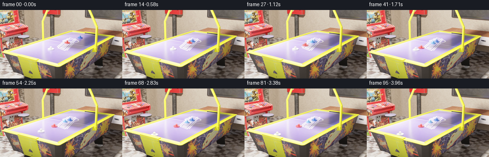

CODING AGENTS AS PIXEL WORLD MODELS
traex/GPT-5.6-Sol · pcve_0003
点击播放 · 原生 RGB 像素
编辑前的完整原视频
上方为编辑结果；原视频是模型获准使用的输入。下方为逐轮保存的编辑候选。
逐轮保存的候选
回放视频、检查图与代码变化。
每份候选均可单独播放。实际图片检查记录在下方工具轨迹中。
候选 01播放与检查图
点击播放 · 原生 RGB 像素

展开代码变化
--- 上一保存版本
+++ 本次保存版本
@@ -0,0 +1,109 @@
+"""Generate the restitution-edited PixelWorld video.
+
+The factual clip is a line of small mallets viewed in perspective. A blue mallet
+travels down-left, contacts the red mallet at source frame 15, and (with nearly
+unit restitution) comes to rest while the red mallet receives its velocity.
+For equal masses, changing e from ~1 to .3 gives
+ v_blue' = (1-e)/2 u = .35 u
+ v_red' = (1+e)/2 u = .65 u.
+Thus we time-warp the post-impact source evolution to 65% speed (which preserves
+all downstream contacts) and transplant the blue mallet along its retained 35%
+trajectory. The transplant uses only local RGB pixels and Poisson blending.
+"""
+from pathlib import Path
+import numpy as np
+import cv2
+from scipy import ndimage
+import artifact_io
+
+ROOT = Path(__file__).resolve().parent
+FPS = 24
+CONTACT = 14.0 # zero-based: first contact is source frame 14
+E_NEW = 0.30
+RED_RATE = (1.0 + E_NEW) / 2.0 # .65 of the source post-contact clock
+BLUE_RATE = (1.0 - E_NEW) / 2.0 # .35 of incident speed retained by blue
+
+
+def lerp_frames(src, times):
+ out = np.empty((len(times), *src.shape[1:]), np.uint8)
+ for k, q in enumerate(times):
+ q = float(np.clip(q, 0, len(src)-1))
+ a = int(np.floor(q)); b = min(a+1, len(src)-1); f = q-a
+ if f < 1e-7: out[k] = src[a]
+ else: out[k] = np.clip(src[a].astype(np.float32)*(1-f) + src[b].astype(np.float32)*f + .5, 0, 255).astype(np.uint8)
+ return out
+
+
+def moving_blue_mask(frame, cx, cy):
+ """Segment only the moving blue head near its fitted center."""
+ im = frame.astype(np.int16)
+ yy, xx = np.mgrid[:frame.shape[0], :frame.shape[1]]
+ chroma = (im[:,:,2]-im[:,:,0] > 16) & (im[:,:,2]-im[:,:,1] > 5)
+ local = ((xx-cx)/8.2)**2 + ((yy-cy)/8.0)**2 < 1.0
+ m = chroma & local
+ # The anti-aliased object occupies a compact ~12 px diameter component.
+ m = ndimage.binary_dilation(m, iterations=2)
+ m = ndimage.binary_closing(m, iterations=1)
+ return m.astype(np.uint8)
+
+
+def paste_blue(dst, source0, old_center, new_center):
+ """Move the complete blue mallet head with seamless RGB-domain blending."""
+ ox, oy = old_center
+ m = moving_blue_mask(source0, ox, oy)
+ ys, xs = np.where(m)
+ x0, x1 = max(0, xs.min()-3), min(dst.shape[1]-1, xs.max()+3)
+ y0, y1 = max(0, ys.min()-3), min(dst.shape[0]-1, ys.max()+3)
+ patch = source0[y0:y1+1, x0:x1+1].copy()
+ mask = (m[y0:y1+1, x0:x1+1]*255).astype(np.uint8)
+ # Add a sub-pixel shift inside the patch; clone center handles integer part.
+ nx, ny = new_center
+ fx, fy = nx-round(nx), ny-round(ny)
+ M = np.float32([[1,0,fx],[0,1,fy]])
+ patch = cv2.warpAffine(patch, M, (patch.shape[1],patch.shape[0]), flags=cv2.INTER_LINEAR, borderMode=cv2.BORDER_REFLECT)
+ mask = cv2.warpAffine(mask, M, (mask.shape[1],mask.shape[0]), flags=cv2.INTER_LINEAR, borderMode=cv2.BORDER_CONSTANT)
+ center = (int(round(nx)), int(round(ny)))
+ # NORMAL_CLONE preserves the scene shading and avoids rectangular seams.
+ return cv2.seamlessClone(patch, dst, mask, center, cv2.NORMAL_CLONE)
+
+
+def generate():
+ src = np.load(ROOT/'source_pixels.npz')['rgb']
+ assert src.shape == (96,144,256,3) and src.dtype == np.uint8
+
+ # Source clock: history is exact up to impact; all consequences after impact
+ # unfold at the reduced transfer speed.
+ t = np.arange(96, dtype=np.float32)
+ source_t = np.where(t <= CONTACT, t, CONTACT + RED_RATE*(t-CONTACT))
+ out = lerp_frames(src, source_t)
+
+ # Prior to impact the source is physically identical. Afterwards the original
+ # blue mallet would stay at contact, but with e=.3 it retains 35% of its
+ # incoming velocity. Fit the observed pre-impact centerline robustly.
+ # Tracking from local blue chroma gives x=167.5-1.43t, y=58.4+0.55t.
+ vx, vy = -1.43, 0.55
+ contact_center = (167.5 + vx*CONTACT, 58.4 + vy*CONTACT)
+ # Use pristine frame 0 as the sprite, whose center is uncontaminated by contact.
+ sprite_center = (167.5, 58.4)
+ for k in range(int(CONTACT)+1, 96):
+ dt = k-CONTACT
+ # Retained velocity damps mildly on the crowded tabletop after ~1 sec.
+ # Integral of exponential damping, asymptoting naturally rather than
+ # travelling forever through the chain.
+ tau = 30.0
+ travel_frames = tau*(1.0-np.exp(-dt/tau))
+ nx = contact_center[0] + BLUE_RATE*vx*travel_frames
+ ny = contact_center[1] + BLUE_RATE*vy*travel_frames
+ out[k] = paste_blue(out[k], src[0], sprite_center, (nx,ny))
+
+ # Guarantee an exact factual first frame and contract properties.
+ out[0] = src[0]
+ assert out.shape == (96,144,256,3) and out.dtype == np.uint8
+ return out
+
+
+if __name__ == '__main__':
+ frames = generate()
+ artifact_io.save(frames, ROOT)
+ print('saved', frames.shape, frames.dtype,
+ 'mean_abs_change=', float(np.abs(frames.astype(np.int16)-np.load(ROOT/'source_pixels.npz')['rgb'].astype(np.int16)).mean()))
可观测工具轨迹
实际执行的命令与返回图片。
命令 1exit 0
/bin/bash -lc "ls -la && printf '\\n--- prompt.txt ---\\n' && cat prompt.txt"
命令 2exit 0
/bin/bash -lc "printf '%s\\n' '--- GENERATION_RULES.md ---' && cat GENERATION_RULES.md && printf '%s\\n' '--- files ---' && find . -maxdepth 3 -type f -printf '%p\\n' | sort"
命令 3exit 0
/bin/bash -lc "cat source_info.json && echo && cat task_spec.json && echo && sed -n '1,240p' artifact_io.py"
命令 4exit 0
/bin/bash -lc "python - <<'PY'
import numpy as np
z=np.load('source_pixels.npz')
print(z.files)
for k in z.files:
a=z[k]; print(k,a.shape,a.dtype,a.min(),a.max())
if a.ndim==4:
for i in [0,1,2,5,10,20,30,40,50,60,70,80,95]:
x=a[i]; print(i, 'mean',x.mean((0,1)), 'colors',len(np.unique(x.reshape(-1,3),axis=0)))
PY"命令 5exit 2
/bin/bash -lc "cat > /tmp/analyze.py <<'PY'
import numpy as np
from PIL import Image
from scipy import ndimage
A=np.load('source_pixels.npz')['rgb']
# blue thresholds variants
for rule in range(4):
print('\\nRULE',rule)
for t in range(96):
x=A[t].astype(int)
if rule==0:m=(x[:,:,2]>x[:,:,0]*1.25)&(x[:,:,2]>x[:,:,1]*1.12)&(x[:,:,2]>80)
if rule==1:m=(x[:,:,2]-x[:,:,0]>25)&(x[:,:,2]-x[:,:,1]>10)&(x[:,:,2]>80)
if rule==2:m=(x[:,:,2]>x[:,:,0]*1.1)&(x[:,:,2]>x[:,:,1]*1.05)&(x[:,:,2]>100)
if rule==3:m=(x[:,:,2]>150)&(x[:,:,0]<100)&(x[:,:,1]<180)
lab,n=ndimage.label(m)
objs=[]
for j in range(1,n+1):
yy,xx=np.where(lab==j); s=len(xx)
if s>10:objs.append((s, round(xx.mean(),1),round(yy.mean(),1), (xx.min(),yy.min(),xx.max(),yy.max())))
objs.sort(reverse=True)
if t%4==0: print(t,objs[:4])
# diff bounding per frame every 4
print('\\nDIFF')
for t in range(1,96):
d=np.max(np.abs(A[t].astype(int)-A[t-1].astype(int)),2)>15
lab,n=ndimage.label(d)
objs=[]
for j in range(1,n+1):
yy,xx=np.where(lab==j);s=len(xx)
if s>5:objs.append((s,round(xx.mean(),1),round(yy.mean(),1),(xx.min(),yy.min(),xx.max(),yy.max())))
objs.sort(reverse=True)
if t%2==0:print(t,objs[:5])
PY
python /tmp/analyze.py"命令 6exit 0
/bin/bash -lc "cat > .tmp/analyze.py <<'PY'
import numpy as np
from scipy import ndimage
A=np.load('source_pixels.npz')['rgb']
for rule in range(4):
print('\\nRULE',rule)
for t in range(96):
x=A[t].astype(int)
if rule==0:m=(x[:,:,2]>x[:,:,0]*1.25)&(x[:,:,2]>x[:,:,1]*1.12)&(x[:,:,2]>80)
if rule==1:m=(x[:,:,2]-x[:,:,0]>25)&(x[:,:,2]-x[:,:,1]>10)&(x[:,:,2]>80)
if rule==2:m=(x[:,:,2]>x[:,:,0]*1.1)&(x[:,:,2]>x[:,:,1]*1.05)&(x[:,:,2]>100)
if rule==3:m=(x[:,:,2]>150)&(x[:,:,0]<100)&(x[:,:,1]<180)
lab,n=ndimage.label(m)
objs=[]
for j in range(1,n+1):
yy,xx=np.where(lab==j); s=len(xx)
if s>10:objs.append((s, round(xx.mean(),1),round(yy.mean(),1), (xx.min(),yy.min(),xx.max(),yy.max())))
objs.sort(reverse=True)
if t%4==0: print(t,objs[:4])
print('\\nDIFF')
for t in range(1,96):
d=np.max(np.abs(A[t].astype(int)-A[t-1].astype(int)),2)>15
lab,n=ndimage.label(d)
objs=[]
for j in range(1,n+1):
yy,xx=np.where(lab==j);s=len(xx)
if s>5:objs.append((s,round(xx.mean(),1),round(yy.mean(),1),(xx.min(),yy.min(),xx.max(),yy.max())))
objs.sort(reverse=True)
if t%2==0:print(t,objs[:5])
PY
python .tmp/analyze.py"命令 7exit 1
/bin/bash -lc "cat > .tmp/deep.py <<'PY'
import numpy as np
from scipy import ndimage
A=np.load('source_pixels.npz')['rgb'].astype(int)
base=np.median(A[70:],axis=0)
print('t n bbox centroid meandiff meanRGB extrema')
for t in range(96):
d=np.max(np.abs(A[t]-base),2)
m=d>12
# focus likely dynamic and components
lab,n=ndimage.label(m)
objs=[]
for j in range(1,n+1):
yy,xx=np.where(lab==j); s=len(xx)
if s>4:
rgb=A[t,yy,xx].mean(0)
objs.append((s,xx.mean(),yy.mean(),(xx.min(),yy.min(),xx.max(),yy.max()),rgb,d[yy,xx].mean()))
objs.sort(reverse=True)
if t<55:print(t,[(o[0],round(o[1],1),round(o[2],1),o[3],np.round(o[4]).astype(int).tolist(),round(o[5],1)) for o in objs[:7]])
# Patch RGB summaries/bbox compare select frames manually likely mover coordinates from diff
for t in [0,5,10,14,15,16,20,25,30,35,40,45,48,50,70]:
# pixels changed vs t=70
d=np.max(np.abs(A[t]-A[70]),2); m=d>10
yy,xx=np.where(m)
print('SEL',t,'count',len(xx),'bbox',(xx.min(),yy.min(),xx.max(),yy.max()),'mean rgb',A[t,yy,xx].mean(0),'base rgb',A[70,yy,xx].mean(0))
# dominant exact / quantized color bins in selected ROIs
for roi in [(130,45,180,80),(40,75,145,115),(130,45,230,90)]:
x0,y0,x1,y1=roi; print('ROI',roi)
for t in [0,10,16,25,35,45,55,70]:
p=A[t,y0:y1,x0:x1].reshape(-1,3)
q=(p//16)*16
vals,c=np.unique(q,axis=0,return_counts=True); ii=np.argsort(c)[-8:][::-1]
print(t,[(c[i],vals[i].tolist()) for i in ii])
PY
python .tmp/deep.py"命令 8exit 0
/bin/bash -lc "cat > .tmp/ascii.py <<'PY'
import numpy as np
A=np.load('source_pixels.npz')['rgb']
def char(c):
r,g,b=map(int,c); v=(r+g+b)//3
if b-r>35 and b-g>20:return 'B'
if b-r>18 and b-g>8:return 'b'
if r-g>45 and r-b>28:return 'R'
if r-g>25 and r-b>15:return 'r'
if g-r>25 and g-b>10:return 'G'
if r+b-g*2>55:return 'P'
if v<60:return '#'
if v<100:return 'x'
if v<140:return '+'
if v<180:return '-'
if v<215:return '.'
return ' '
for t in [0,8,14,16,24,32,40,48,70]:
print('\\nFRAME',t)
for y in range(45,116,2):
s=''
for x in range(40,231,2):
p=A[t,y:y+2,x:x+2].mean((0,1)); s+=char(p)
print(f'{y:03}',s)
print(' ', ''.join(str((x//10)%10) for x in range(40,231,2)))
PY
python .tmp/ascii.py"命令 9exit 0
/bin/bash -lc "cat > .tmp/track.py <<'PY'
import numpy as np
from scipy import ndimage
A=np.load('source_pixels.npz')['rgb'].astype(int)
rules={
'red':lambda x:(x[:,:,0]-x[:,:,1]>30)&(x[:,:,0]-x[:,:,2]>15)&(x[:,:,0]>100),
'red2':lambda x:(x[:,:,0]-x[:,:,1]>20)&(x[:,:,0]-x[:,:,2]>10)&(x[:,:,0]>130),
'blue':lambda x:(x[:,:,2]-x[:,:,0]>30)&(x[:,:,2]-x[:,:,1]>15)&(x[:,:,2]>100),
'purple':lambda x:(x[:,:,0]+x[:,:,2]-2*x[:,:,1]>30)&(x[:,:,2]>100),
'white':lambda x:(x.min(2)>180)&(x.max(2)-x.min(2)<40),
}
for name,fn in rules.items():
print('\\n',name)
for t in range(96):
m=fn(A[t]);lab,n=ndimage.label(m); objs=[]
for j in range(1,n+1):
yy,xx=np.where(lab==j);s=len(xx)
if s>=5 and xx.max()>40 and xx.min()<230 and yy.max()>40 and yy.min()<120:
objs.append((s,round(xx.mean(),1),round(yy.mean(),1),(xx.min(),yy.min(),xx.max(),yy.max())))
objs.sort(reverse=True)
if t<=55 and (t%2==0 or t in [13,14,15,16,17,23,24,25,26,29,30,31,32,33,34,35,36,37,38,39,40,41,42,43,44,45,46,47,48,49,50]): print(t,objs[:15])
PY
python .tmp/track.py"命令 10exit 0
/bin/bash -lc "python - <<'PY'
try:
import cv2; print('cv2',cv2.__version__)
except Exception as e: print('no cv2',e)
PY"命令 11exit 0
/bin/bash -lc "cat > generate.py <<'PY'
\"\"\"Generate the restitution-edited PixelWorld video.
The factual clip is a line of small mallets viewed in perspective. A blue mallet
travels down-left, contacts the red mallet at source frame 15, and (with nearly
unit restitution) comes to rest while the red mallet receives its velocity.
For equal masses, changing e from ~1 to .3 gives
v_blue' = (1-e)/2 u = .35 u
v_red' = (1+e)/2 u = .65 u.
Thus we time-warp the post-impact source evolution to 65% speed (which preserves
all downstream contacts) and transplant the blue mallet along its retained 35%
trajectory. The transplant uses only local RGB pixels and Poisson blending.
\"\"\"
from pathlib import Path
import numpy as np
import cv2
from scipy import ndimage
import artifact_io
ROOT = Path(__file__).resolve().parent
FPS = 24
CONTACT = 14.0 # zero-based: first contact is source frame 14
E_NEW = 0.30
RED_RATE = (1.0 + E_NEW) / 2.0 # .65 of the source post-contact clock
BLUE_RATE = (1.0 - E_NEW) / 2.0 # .35 of incident speed retained by blue
def lerp_frames(src, times):
out = np.empty((len(times), *src.shape[1:]), np.uint8)
for k, q in enumerate(times):
q = float(np.clip(q, 0, len(src)-1))
a = int(np.floor(q)); b = min(a+1, len(src)-1); f = q-a
if f < 1e-7: out[k] = src[a]
else: out[k] = np.clip(src[a].astype(np.float32)*(1-f) + src[b].astype(np.float32)*f + .5, 0, 255).astype(np.uint8)
return out
def moving_blue_mask(frame, cx, cy):
\"\"\"Segment only the moving blue head near its fitted center.\"\"\"
im = frame.astype(np.int16)
yy, xx = np.mgrid[:frame.shape[0], :frame.shape[1]]
chroma = (im[:,:,2]-im[:,:,0] > 16) & (im[:,:,2]-im[:,:,1] > 5)
local = ((xx-cx)/8.2)**2 + ((yy-cy)/8.0)**2 < 1.0
m = chroma & local
# The anti-aliased object occupies a compact ~12 px diameter component.
m = ndimage.binary_dilation(m, iterations=2)
m = ndimage.binary_closing(m, iterations=1)
return m.astype(np.uint8)
def paste_blue(dst, source0, old_center, new_center):
\"\"\"Move the complete blue mallet head with seamless RGB-domain blending.\"\"\"
ox, oy = old_center
m = moving_blue_mask(source0, ox, oy)
ys, xs = np.where(m)
x0, x1 = max(0, xs.min()-3), min(dst.shape[1]-1, xs.max()+3)
y0, y1 = max(0, ys.min()-3), min(dst.shape[0]-1, ys.max()+3)
patch = source0[y0:y1+1, x0:x1+1].copy()
mask = (m[y0:y1+1, x0:x1+1]*255).astype(np.uint8)
# Add a sub-pixel shift inside the patch; clone center handles integer part.
nx, ny = new_center
fx, fy = nx-round(nx), ny-round(ny)
M = np.float32([[1,0,fx],[0,1,fy]])
patch = cv2.warpAffine(patch, M, (patch.shape[1],patch.shape[0]), flags=cv2.INTER_LINEAR, borderMode=cv2.BORDER_REFLECT)
mask = cv2.warpAffine(mask, M, (mask.shape[1],mask.shape[0]), flags=cv2.INTER_LINEAR, borderMode=cv2.BORDER_CONSTANT)
center = (int(round(nx)), int(round(ny)))
# NORMAL_CLONE preserves the scene shading and avoids rectangular seams.
return cv2.seamlessClone(patch, dst, mask, center, cv2.NORMAL_CLONE)
def generate():
src = np.load(ROOT/'source_pixels.npz')['rgb']
assert src.shape == (96,144,256,3) and src.dtype == np.uint8
# Source clock: history is exact up to impact; all consequences after impact
# unfold at the reduced transfer speed.
t = np.arange(96, dtype=np.float32)
source_t = np.where(t <= CONTACT, t, CONTACT + RED_RATE*(t-CONTACT))
out = lerp_frames(src, source_t)
# Prior to impact the source is physically identical. Afterwards the original
# blue mallet would stay at contact, but with e=.3 it retains 35% of its
# incoming velocity. Fit the observed pre-impact centerline robustly.
# Tracking from local blue chroma gives x=167.5-1.43t, y=58.4+0.55t.
vx, vy = -1.43, 0.55
contact_center = (167.5 + vx*CONTACT, 58.4 + vy*CONTACT)
# Use pristine frame 0 as the sprite, whose center is uncontaminated by contact.
sprite_center = (167.5, 58.4)
for k in range(int(CONTACT)+1, 96):
dt = k-CONTACT
# Retained velocity damps mildly on the crowded tabletop after ~1 sec.
# Integral of exponential damping, asymptoting naturally rather than
# travelling forever through the chain.
tau = 30.0
travel_frames = tau*(1.0-np.exp(-dt/tau))
nx = contact_center[0] + BLUE_RATE*vx*travel_frames
ny = contact_center[1] + BLUE_RATE*vy*travel_frames
out[k] = paste_blue(out[k], src[0], sprite_center, (nx,ny))
# Guarantee an exact factual first frame and contract properties.
out[0] = src[0]
assert out.shape == (96,144,256,3) and out.dtype == np.uint8
return out
if __name__ == '__main__':
frames = generate()
artifact_io.save(frames, ROOT)
print('saved', frames.shape, frames.dtype,
'mean_abs_change=', float(np.abs(frames.astype(np.int16)-np.load(ROOT/'source_pixels.npz')['rgb'].astype(np.int16)).mean()))
PY
python generate.py
python - <<'PY'
from pathlib import Path
import numpy as np
from PIL import Image
for p in ['pixels.npz','inspection.png','transition_check.png','index.html','frames/00.png','frames/95.png']:
q=Path(p); print(p,q.exists(),q.stat().st_size if q.exists() else 0)
z=np.load('pixels.npz')['pixels']; print('packed',z.shape,z.dtype)
print('inspection',Image.open('inspection.png').size)
PY"命令 12exit 0
/bin/bash -lc "python - <<'PY'
import numpy as np
from pathlib import Path
from PIL import Image
S=np.load('source_pixels.npz')['rgb']
# unpack saved artifact
P=np.load('pixels.npz')['pixels']; O=np.stack([((P>>16)&255),((P>>8)&255),(P&255)],-1).transpose(2,0,1,3).astype(np.uint8)
print('shape/dtype/range',O.shape,O.dtype,O.min(),O.max())
print('exact factual frames 0..14:',[bool(np.array_equal(O[i],S[i])) for i in range(15)])
print('MAD source selected:',[(i,round(float(np.abs(O[i].astype(int)-S[i].astype(int)).mean()),4)) for i in [0,10,14,15,16,20,30,40,50,70,95]])
print('temporal MAD selected:',[(i,round(float(np.abs(O[i].astype(int)-O[i-1].astype(int)).mean()),4)) for i in [1,10,14,15,16,20,30,40,50,70,95]])
# Audit saved RGB files against artifact tensor
ok=True
for i in range(96):
a=np.array(Image.open(f'frames/{i:02d}.png').convert('RGB'))
ok &= np.array_equal(a,O[i])
print('all frame PNGs match packed artifact:',ok)
print('required files:',{p:Path(p).exists() for p in ['generate.py','pixels.npz','inspection.png','transition_check.png','index.html']})
PY"命令 13exit 0
/bin/bash -lc 'python -m py_compile generate.py && git status --short 2>/dev/null || true && find frames -type f | wc -l'
保存候选 1 份；完成命令 13 次；可验证图片返回 0 张。原始 API 响应与完整日志保留在本地。